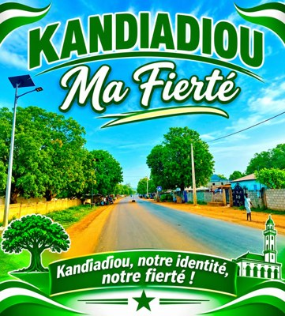

Notre culture
Chants, danses, fêtes et cérémonies rythment l’année et rassemblent petits et grands autour des mêmes valeurs.

Kandiadjou ma fiertéLà où il y a des hommes courageux, il y a derrière eux des femmes battantes et des enfants bien élevés
Découvrir notre villageKandiadjou est un village de la Casamance, au sud du Sénégal. Situé entre Carrefour et Diaroumé. Son nom dit déjà beaucoup : c’est un lieu de passage et de rencontre, où se croisent les routes, les familles et les habitants des villages voisins.
Génération après génération, les habitants ont bâti ici une vie fondée sur le travail de la terre, l’entraide et le respect des anciens. Aujourd’hui, le village grandit sans oublier ce qui l’a fait naître.
Quatre piliers qui font l’identité de Kandiadjou.
Chants, danses, fêtes et cérémonies rythment l’année et rassemblent petits et grands autour des mêmes valeurs.
Transmises par les anciens, nos traditions guident les grandes étapes de la vie et gardent le village uni.
Nos langues sont le lien entre les générations. On les parle à la maison, au marché et pendant les fêtes.
Ce qui facilite la vie de chaque habitant, chaque jour.
Il accueille les malades du village et des environs et veille sur la santé de toutes les familles.
Ici nos enfants apprennent, grandissent et préparent l’avenir de Carrefour Diaroumé.
Un lieu vivant où l’on vend les produits de la terre, où l’on discute et où l’on se retrouve.
Point de ravitaillement et de passage, elle garde le village relié aux routes de la région.
L’ASC Raza remporté le navétane. Cette victoire est la fierté des joueurs, de leurs supporters et de tout le village, qui a vibré derrière son équipe jusqu’au bout.
Bravo à l’ASC Raza, notre champion !
Le cœur spirituel de Kandiadjou et le paysage qui l’entoure.
Lieu de prière, de paix et de rassemblement, elle est au centre de la vie du village, surtout les jours de fête.
Des maisons entourées d’arbres, des chemins de terre rouge et la verdure de la Casamance à perte de vue.
Dans presque chaque cour, on élève des animaux : une richesse pour la famille et pour les grandes occasions.
Très présents au village, surtout au moment des fêtes religieuses.
Elles fournissent les œufs et la viande pour nourrir les familles.
Robustes et précieuses, elles se débrouillent bien dans nos paysages.
La terre de Casamance est généreuse. Après les pluies, les champs et les rizières se remplissent de cultures.
Culture de base, source de revenus.
Cultivé pour nourrir les familles.
Le grand plat de la Casamance, planté dans les rizières.
Une céréale solide pour les repas.
Un légume incontournable de nos sauces.
Ce pont relie deux villages voisins et rapproche leurs habitants, leurs commerces et leurs familles. Sous lui, l’eau de la mer s’avance dans les terres et dessine un paysage que tout le monde admire.
Un pont qui relie deux villages et un paysage à ne pas manquer.
La mairie organise la vie publique et porte le développement de la commune. Elle est dirigée par M. le maire Malang Sény Faty.
Le lieu où se décident les projets pour le village et où les habitants viennent faire leurs démarches.
À la tête de la commune, il travaille avec les habitants pour faire avancer le village.
Carrefour Diaroumé est un carrefour : ici, on voyage facilement.
Pour les longs trajets vers les villes de la région.
Rapide et pratique pour circuler d’un village à l’autre.
Un transport commun pour voyager ensemble à petit prix.
Ce que nous portons, ce que nous célébrons, ce que nous transmettons à nos enfants.
Pagnes, boubous et tenues colorées : nos vêtements racontent nos fêtes et nos origines.
Figure importante de nos traditions, il est lié aux grandes cérémonies et veille sur la communauté.
Une tradition qui rassemble la communauté et fait vivre l’héritage des anciens.